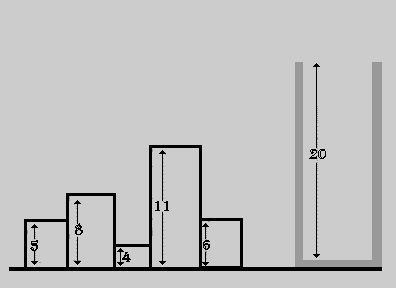
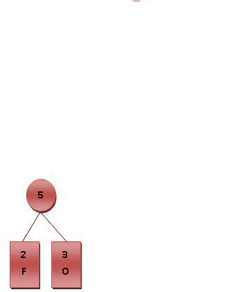
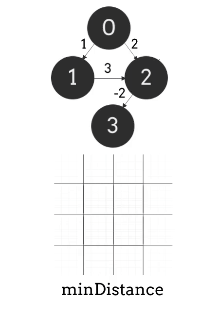

Knapsack Problem
The knapsack problem is a combinatorial optimization problem where the goal is to maximize the total value of items placed in a knapsack of limited capacity.

Dijkstra's Algorithm
Dijkstra's algorithm finds the shortest paths between nodes in a graph, which may represent, for example, road networks.It was developed by Dutch computer scientist Edsger W. Dijkstra in 1956.

Huffman's Algorithm
Huffman's algorithm is a greedy algorithm used for lossless data compression by constructing an optimal prefix code.

Floyd's Algorithm
Floyd's algorithm, also known as Floyd-Warshall, finds the shortest paths between all pairs of nodes in a weighted graph.
